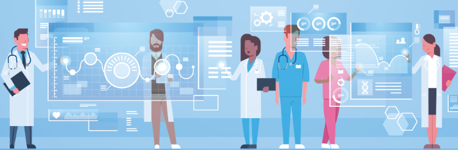

Artificial Intelligence in Healthcare
Purpose
Artificial Intelligence can be used in a variety of ways within the healthcare sector, for example to create machines that can help patients through more accuracy, or the identification of certain diseases and illnesses. Within a rapidly growing society, it plays an important role, with its purpose is mainly to focus on assisting patients as much as possible, through optimisation, increasing efficiency in time and resource management, as well as to provide more personalised treatment.
Features:
There is a huge variety of artificial intelligence that can be used in healthcare. The two most important uses of artificial intelligence within healthcare right now are to analyse lots of data sets from patients, as well as analysing medical images. Analysing data and medical images is incredibly important within the medical fields, because this analyse of data sets can include data like:
- Insights into patient trends and patterns and their responses to treatment
- Administration processes, such as when to schedule arrangements
- Personalised treatments that can be based on patient's history, reactions and allergies more efficiently
- Monitor vital signs and symptoms, and alerting professionals when there are changes or when there is a life-threatening sign.
For some further information for the uses of artificial intelligence in healthcare, click here

Existing Products
2 of the most important and valuable artificial intelligent products within the healthcare sector are AI-assisted robotic surgery and workflow and administrative tasks.
"Fantasy into reality: this tiny robot may transform heart operations"
AI-assisted surgery
AI-assisted robotic surgery can guide surgeon's instruments within surgery, making it more precise and accurate. Even if surgeons are also extremely accurate already, AI-assisted robotic surgery is faster, leading to a reduction in patient's hospital stay. Because AI-assisted robotic surgery can be more accurate and faster, the surgery wouldn't need large incisions, allowing patients to heal faster to get back to their lives. Many hearts surgeons use 'Heartlander' a miniature AI robot that enters a small incision on the chest and helps within surgeries close or related to the heart.
Medical Image scanning
Medical imaging is an important base of healthcare, which requires the use of advanced technologies to visualise internal parts of the body. This includes X-rays, ultrasounds, Magnetic resonance imaging (MRI) scans and more. It is used to monitor health, diagnose certain conditions, inform treatment and observe disease progression. With the help of deep learning algorithms, and the continued development of AI everywhere in the world, it has enabled medical practitioners to identify abnormalities and diseases with a higher level of speed and precision.
Workflow and administrative tasks
Artificial intelligence can help within ordering tests, prescribing tests, prescribing medication, writing notes, make treatment more personalised and effective based on the patient's medical history. For example, Cleveland Clinic and IBM's partnership includes an AI called Watson that can analyse thousands of medical papers and use it to make personalised treatment plans for patients.

Hardware and Software
Workflow and administrative tasks:
Hardware
Electronic Health Record (EHR) Systems .
- These systems gave clinicians digital access to medication information, as well as other diagnosis, medical imaging and pathology results, and a range of assessments.
- They also integrate patient data, in almost real time.
Software
Medical Billing and Revenue Cycle Management
- Examples like Waystar and Change Healthcare.
- They are able use other machine learning algorithms to automate coding, claims processing and revenue optimisation.
- Medical Billing focuses solely on claims submission and payment processing.
- Revenue Cycle Management covers a broad range of other functions, such as patient scheduling, registration, insurance, coverage certification, eligibility checks, coding, claims denials management, payment positing and collections.
"Switching from radiographic pathological data to clinically meaningful endpoints"
Analysis of medical images
By leveraging machine learning algorithms, AI systems can analyse medical images with speed and precisions. The first step is to first obtain the medical images, through specialised medical imaging equipment. The images are then also stored digitally. They may be obtained through electronic health records (EHRs), imaging technology, genetic data and portable sensor data. Then, the data is collected and then analysed by Ai algorithms. Relevant features are then extracted from the medical images, which includes things like patterns, shapes or other characteristics that allows for more effective image analysis to find diagnosis and analysis.
Hardware
Graphics Processing Units (GPUs):
- GPUs can handle massive number of datasets, which allows it to perform complex computations.
- In healthcare situations where medical images are necessary due to emergency or medical situations, due to GPU being highly efficient at parallel processing, which is essential for handling the massive amounts of data required within processing medical images, they can obtain immediate insights form medical images.
Tensor Processing Units (TPUs):
- Tensor Processing Units (TPUs) is a hardware accelerator that has been developed by Google in other to accelerate machine learning workloads.
- TPUs can perform faster than CPUs and GPUs, making it faster, and therefore allows healthcare organisations to analyse medical images more quickly and accurately.
Software
- A software library that are often used by researchers or scientists to train deep learning models.
- These frameworks allow people to train their models withing digging into the algorithms and completely learning about deep learning, neural networks and machine learning.
- Some Deep Learning Frameworks that are used are TensorFlow, PyTorch, Keras and MXNet.
Medical Image Analysis Software
- Medical Image Analysis Software refers to specialised software that is used for certain tasks such as image, preprocessing, segmentation, feature extraction and visualisation.
- It is also equipped with various tools and features tailored to different modalities and clinical specialties.
- Some examples of this includes 3D Slicer, ITK-SNAP, OsiriX, Horos, and MeVisLab.

Effects of AI in Healthcare on Individuals and Society
"No longer science fiction, AI and robotics are transforming healthcare for everybody"
AI can analyse vast amounts of data and is incredibly helpful within healthcare through groundbreaking ways that Artificial intelligence can diagnose, treat, and monitor patients of all kinds.
Differences that artificial intelligence have over normal machinery and humans, are that they can provide more accurate diagnoses, having more personalised treatment, as well as being more efficient overall, saving time and resources which are all extremely important within a rapidly developing society.
However, there are currently no well-defined regulations that are in place to address the legal, ethical or social issues that may arise due to Artificial Intelligence in healthcare settings.
Legal, ethical and social issues

The biggest concerns that people have within artificial intelligence in healthcare especially, is issues within patients' privacy and surveillance, certain biases or discrimination that may be held by the creator of artificial intelligence and the ethical issue of challenging the role of human.
Patient's Privacy and Surveillance
The new use of this technology raises a concern that it could potentially include sources of inaccuracy as well as more data breaches, as Ai can be hacked, and the data could be used for malicious purposes. Consent is also an important issue within this, in which many individuals get their data taken down without their consent to help the company.
Certain Biases or Discrimination
Bias and discrimination often occur within marginalised groups, with real human beings, either unconsciously or explicitly. However, these certain biases or discrimination may also occur within AI in the healthcare sector. For example, if using a military health data source, the AI model will yield less about the female population as most service members are usually males. This may mean there is a lack of information on other minority groups, which may lead to delayed or inappropriate care towards patients that harm them rather than benefit them.
The Ethical Issue of Challening the Role of Humans
The main ethical issue focused with AI within healthcare especially, is that a human replacement like AI would lead to dehumanisation within medicine. This ethical issue also covers fairness, autonomy, transparency, and responsibility. People believe that it is a fundamental right to treat other people with dignity and respect, which may not be provided by AI as it leads to the erosion of human-centric care. The main issue surrounding this is a prevailing sentiment to maintain human involvement to ensure empathy, understanding and ethical decision making.
Benefits
"Streamlines healthcare, optimises treatment, enhances lives"
Regardless of all the harmful consequences especially within the legal, ethical and social issues of AI within healthcare, the benefits still outweigh the detriments. Some of these benefits that cannot be outweighed are:
- Improved Diagnosis and Treatment
- Efficiency
Improved Diagnosis and Treatment
Other than analysing medical images, being used as X-rays, CT scans and MRIs, AI can also be used within the analysis to identify certain issues such as abnormalities, and other conditions. There are already some systems that able to detect, identity and quantify microorganisms, diagnose and classify particular diseases, even to predict the final outcomes of the patients. Due to AI systems being able to easily interpret vast amounts of data, they can improve their diagnostic accuracy and making treatment recommendations based on new data.
Even with the legal issues of biases or discrimination, there is also the belief that AI can help healthcare providers to make more objective decisions. Patients of colour in emergency rooms were less likely to receive pain management compared to white patients, according to this study. AI is then able to produce results that explicitly state the necessary pain management necessary regardless of individual and their background to help treat them. Even if this still doesn't push the medical caretaker to provide adequate pain management, this issue lies on the bias of human beings rather than AI.
Efficiency
AI within healthcare has greatly improved efficiency in areas like blood cultures, susceptibility testing and molecular platforms. While there is a chance to inaccurately identify the diseases of a patient, it is more likely for those in the emergency department to save patients that are in emergency situations, due to the enhanced efficiency and accuracy that AI technology can provide. AI are also trained to detect abnormalities in medical images, especially those that would take the human eye longer to detect. They can also process images much faster than humans, which leads to more efficiency within diagnosis and treatment. For example, AI has been extremely successful in identifying lung nodules in chest X-rays.
Recommendations
A potential method to solve the ethical, legal, or social issues presented within the AI in healthcare settings, would be to establish a system lead by the government in order to coordinate and harmonise the responsibilities and activities for everything that is AI related within healthcare.
"Shaping the future of AI in healthcare through ethics and governance"
There have been other methods and recommendations, such as profession-specific codes of practice, as well as shared codes of conducts, and other frameworks. However, the best approach would be a coordinated system-wide approach that is created by the government, in order to ensure the protection of patients, and optimise the health workforce. It will also include a lot of the recommended methods, such as codes of conducts. The Australian government has already been planning something similar to this, which can be accessed by clicking here.

References
Ecological Society of Australia. (2020, January). Ecosystem recovery fund: The ESA's bushfire response. Retrieved January 22, 2020 from https://www.eclsoc.org.au/news/2020/01/esa-bushfire-response
Alowais, S. A., Alghamdi, S. S., Alsuhebany, N., Alqahtani, T., Abdulrahman Alshaya, Almohareb, S. N., Atheer Aldairem, Alrashed, M., Khalid Bin Saleh, Badreldin, H. A., Yami, A., Shmeylan Al Harbi, & Albekairy, A. M. (2023). Revolutionizing healthcare: the role of artificial intelligence in clinical practice. BMC Medical Education, 23(1). https://doi.org/10.1186/s12909-023-04698-z
Pinto-Coelho, L. (2023). How Artificial Intelligence Is Shaping Medical Imaging Technology: A Survey of Innovations and Applications. Bioengineering, 10(12),1435. https://doi.org/10.3390/bioengineering10121435
avcontentteam. (2023, June 24). How Does AI Medical Diagnosis Work? Analytics Vidhya. https://www.analyticsvidhya.com/blog/2023/06/ai-medical-diagnosis-work/
(2024). Larksuite.com. https://www.larksuite.com/en_us/topics/ai-glossary/gpu-graphics-processing-unit
CSIRO. (n.d.). A picture of success: how artificial intelligence is advancing medical imaging. Www.csiro.au https://www.csiro.au/en/news/All/Articles/2023/March/artificial-intelligence-medical-imaging
Watson, W., & Marsh, C. (n.d.). Artificial Intelligence Bias in Healthcare. Www.boozallen.com https://www.boozallen.com/c/insight/blog/ai-bias-in-healthcare.html
Iniesta, R. (2023). The human role to guarantee an ethical AI in healthcare: a five-facts approach. AI and Ethics https://doi.org/10.1007/s43681-023-00353-x
Hobson, J. (2023, November 22). Roadmap recommendations for safe, ethical, sustainable and personalised AI in healthcare. AIDH. https://digitalhealth.org.au/blog/roadmap-recommendations-for-ai-in-healthcare/#:~:text=Key%20recommendations%20include%20establishing%20a
A National Policy Roadmap for Artificial Intelligence in Healthcare 2 3 AI IN HEALTHCARE ROADMAP AI IN HEALTHCARE ROADMAP.(n.d.). https://www.mq.edu.au/__data/assets/pdf_file/0005/1281758/AAAiH_NationalAgendaRoadmap_20231122.pdf